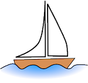

A boat is a watercraft of modest size
designed to float or plane, to provide passage across water. Usually
this water will be inland (lakes) or in protected coastal areas.
However, boats such as the whaleboat were designed to be operated from
a ship in an offshore environment.
In naval terms, a boat is something small
enough to be carried aboard another vessel (a ship). Strictly speaking
and uniquely a submarine is a boat as defined by the Royal Navy. Some
boats too large for the naval definition include the Great Lakes
freighter, riverboat, narrowboat and ferryboat.
This text will display below the boat
image by default. But when the mouse is passed over the boat it will
move up to flow around the image.